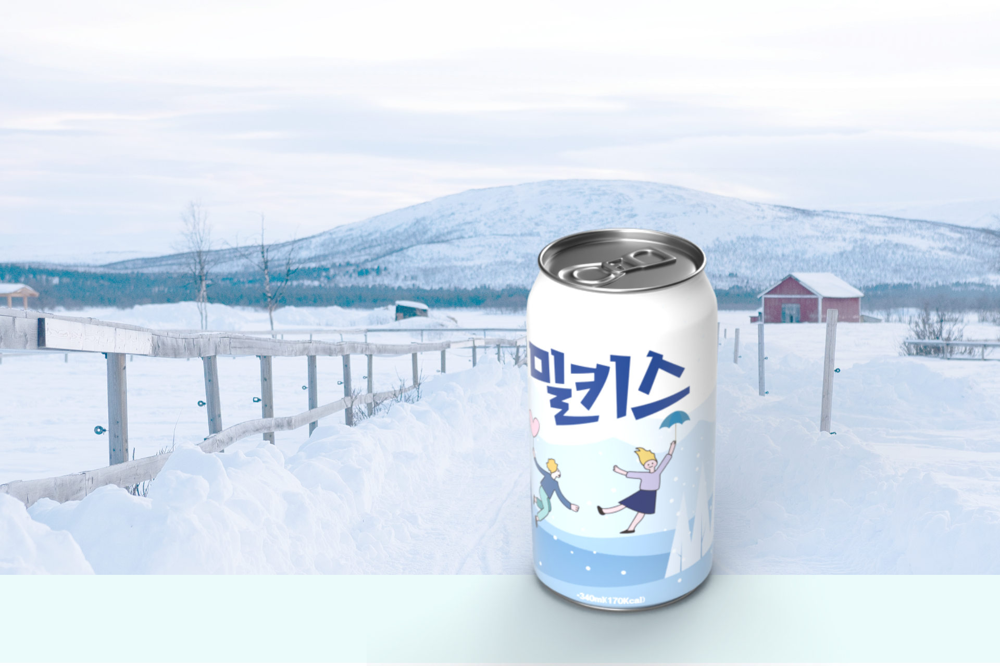
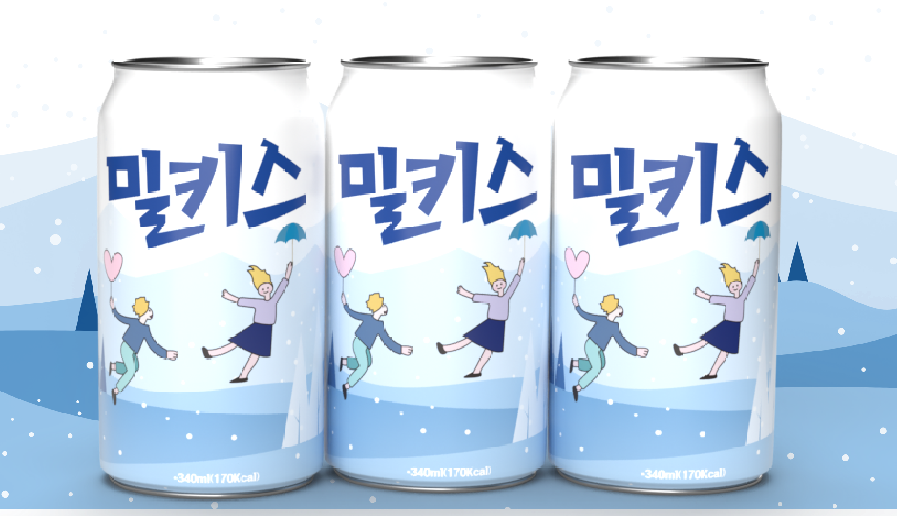

부드러운 우유 풍미와 탄산의 청량함으로 사람 사이를 기분 좋게 이어주는 밀키스 '우린 밀키스로 통했으니까'

밀키스는 우유의 부드러움과 탄산의 상쾌함 그리고 달콤함이 자연스럽게 어우러지는 맛의 대표적인 탄산음료 입니다.
학업에 지친 10-20대 학생들을 위해 탄생했습니다.
발매 초창기 중화권 스타 주윤발의 '사랑해요 밀키스' CF로 대히트에 성공하였으며,
현재 대한민국뿐만 아니라 해외(러시아, 미국, 홍콩 등)에서도 사랑받는 제품입니다.
